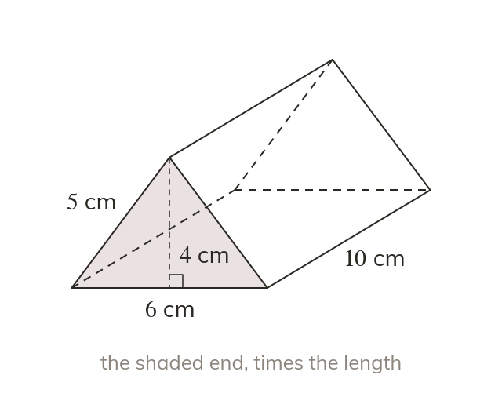

Cross-section times length
A prism's volume is its cross-section area times its length. For a cuboid, that is length × width × height.
The volume of a prism is the area of its cross-section times its length. A cuboid is a prism with a rectangle as its cross-section, so its volume is length × width × height.